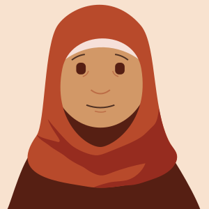

Audience Research: Persona
Indah S.
Demographics
first generation immigrant, woman, Malaysian, Muslim, undocumented and is applying for permanent residency, single mother
Goals
- Be able to work in the U.S. safely and without conflict or threats
- Wants to give her children a better, safer future
- Wants to feel safe and included within U.S. society due to the recent attacks on immigrants and her communities
- Wants to have a platform to share her story in hopes that she can connect with other women struggling like her
Skills
- Has high school level knowledge
- Works as a janitorial staff in a large company in the LA area
- Speaks and reads English and Malay
Attitudes
Indah mostly keeps to herself in order to not caust trouble and unwanted attention. Her children and family depend on her to send money back to Malaysia from the job she works as one of the janitorial staff at a large company. She feels paranoid about being deported back home due to the widespread Islamophobia in the places she works and lives, in addition to the fact that she is undocumented. She feels very isolated due to this and misses having a community of people she can depend on like she did back in her homeland. She depends on social media apps such as WhatsApp to stay connected to her family and friends back home in Malaysia.
Technical Aptitudes
- Has familiarity with smartphones and laptops
- Has access to a smartphone and computer
- Doesn't have much technical knowledge outside of navigating and using simple apps and websites
Environment
Indah currently lives in the LA area with her two children, both of whom have U.S. citizenship. She is currently in the process of applying for permanent residency, but it is taking a long time and it is difficult for her to manage since she is always working to provide for her children and her family back home. Indah struggles with the prevalent Islamophobia in the areas she works and lives in. She has heard stories of women being harassed for wearing hijab and is afraid the same will happen to her. She also feels she is at risk because of her status as an undocumented immigrant woman. Indah also struggles with how much her workplace forces her to work late night shifts with a lower pay than her male and white colleagues and she feels she doesn't have a voice to contest the unfair treatment because of her marginalized identities.